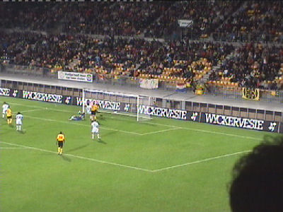
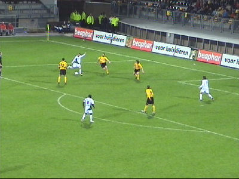

|
Roda JC - Sparta (2-1) 21 oktober 2006
|
Eindelijk, eindelijk, eindelijk zijn daar de Rodameëdsjere weer!
Ongeveer 200 Sparta-supporters in het gastenvak...
... en ca. 30 op west. Hier was gedurende ruim 10 minuten een fors
opstootje aan de gang tussen Rotterdammers ( waarschijnlijk SYC)
en locals. (Later meer hierover in een apart topic).

De chaos was enorm!

In het veld was het aanmerkelijk minder spannend. Hier een afgekeurd
doelpunt van Kah wegens een overtreding op doelman Terol.
In de tweede helft speelde Roda ietsje beter, maar het bleef van een
bedenkelijk niveau.
Davy de Fauw heeft een eigen spandoekje op NOORD !!
Deze overtreding levert een penalty op die genomen gaat worden door
Marcel Meeuwis.
Maar eerst nog een potje protesteren...
Meeuwis legt cool aan...
1-0, (59').
Ioanis Anastasiou heeft inmiddels het veld betreden en wordt hier in
veilige bewaring gehouden door Kah.

Dominique van Dijk kapt kinderlijk eenvoudig een aantal spelers uit en
scoort heel mooi de gelijkmaker.
1-1, (75').
Afstandschot op doelman Terol. Deze stompt de bal weg waarna Van
Tornhout kan intikken, 2-1, (90').
Ode aan de meest aimabele Roda-speler aller tijden! Roda JC steelt de punten
als een dief in de nacht. Het onherkenbare
team heeft een onbegrijpelijke wanprestatie neergezet.
Niettemin feest in de Kickoff met tromgeroffel en hoorngeschal.
Vrolijke supporters.
Nog meer vrolijke supporters.
Op de foto met Jan-Paul.
Chantalle en Rick.
Het biersyndicaat is het er over eens. Het nieuwe stadionbier zal
ALFA EDEL PILS zijn !!!
Dit wordt luid bejubeld! © Koempels Pleasure Dome
|